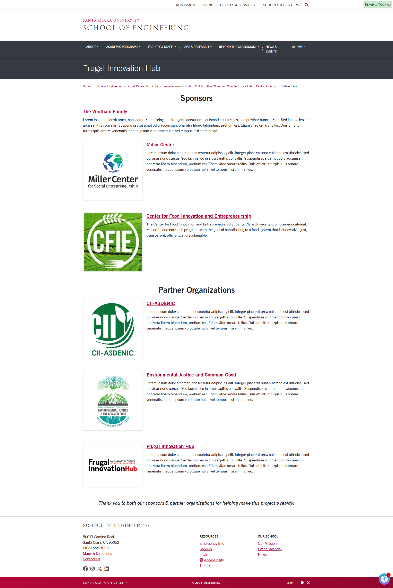
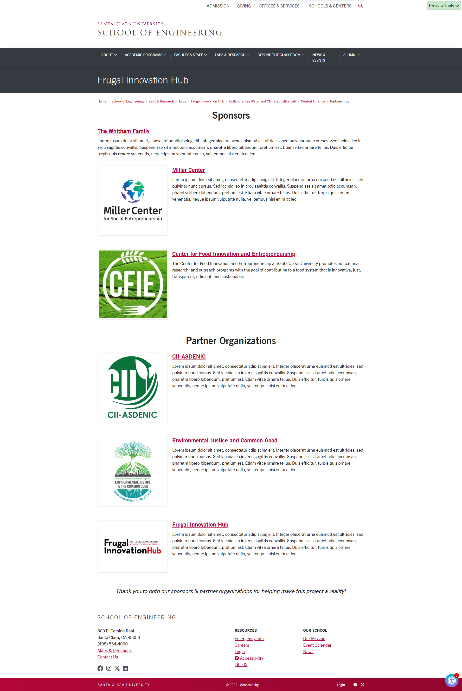

The Global Digital Transformation Clinic (GDTC) is part of the SCU Frugal Innovation Hub, which focuses on humanitarian engineering and technology.
Specifically, the GDTC focuses on helping social enterprises, non-profit organizations, and governmental programs who operate in low-resource settings embrace technology via mobile and web applications.
The site runs through SCU's TerminalFour (or "T4") web system, which is the service hosting all of SCU's webpages. As of now, I have restructured their page entirely for easier content flow and accessibility.
Current Webpage.
Previous prototype screenshots.


NicaAgua is another project currently led by the SCU Frugal Innovation Hub. Over 500 million smallholder farmers worldwide, cultivating less than 2 hectares each, are vital to local food security and economies but face high vulnerability to climatic events like extreme precipitation, hurricanes, and droughts. In response to requests by small farming communities in northern Nicaragua, and in partnership with a local community development organization CII-ASDENIC, a collaboration between members of the Frugal Innovation Hub, the Department of Civil, Environmental, and Sustainable Engineering, the Department of Environmental Studies and Sciences, and the Department of Art and Art History, have developed a mobile phone application called "NicaAgua".
The app's core functionalities involve live weather updates from a local weather station, a broadcast message system for critical water alerts, and access to short-term local weather forcast information. This will help farmers understand how weather patterns have shifted over the years, and other long-term trends, which can help them better predict and plan for future conditions.
The site also runs using the T4 websystem. Currently, I restructuring the current page to highlight the app's core functionalities, as well as to feature clearer visuals and organize content more effectively. I am also working on a separate "Partnerships" page to showcase the organizations sponsoring and partnered with the NicaAgua project.
Current prototype layouts.
 
